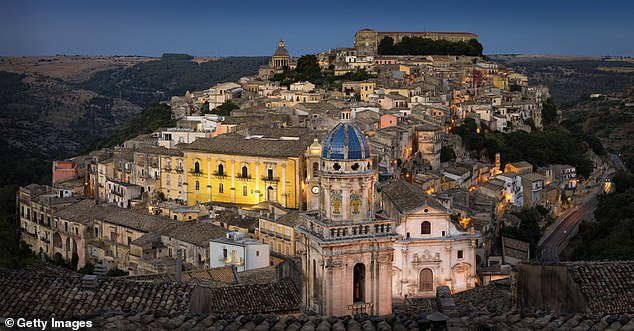

Points of Interest
Sicily is located at the tip of the boot of Italy, and also has Mount Etna, one of Europes most active volcanoes.
Sicily is famous for many things. Among Sicily's most famous attractions there are the Greek temples of the Valley of temples in Agrigento, Palermo's famous opera house, the incredible Baroque churches in Noto and Modica and the island's mouth watering food, some of which has worldwide fame, such as connoli.
Many Sicilians eat the standard Italian breakfast of coffee with cornetti (croissants filled with cream or marmalade), brioche or fette bicottate (packaged dry toast), but they also enjoy a couple of sweet alternatives in summertime: brioche con gelato (a sweet roll filled with ice cream) and granita con panna (flavoured crushed ice, often topped with whipped cream).
With a land area of 25,711 km² (9,927 square miles), Sicily is definitely the largest island in the Mediterranean Sea. The second biggest is also in Italy: it’s Sardinia, with 24,100 km² (9,305 square miles).
While Italian is the official language in Sicily, the locals speak another language: Sicilian. Sicilian is considered as a distinct language, and has been recognized as such by the UNESCO. The language has origins from a wide variety of other languages: Latin, Greek, Spanish, French, Catalan, Provençal and Arabic. But most people in Sicily regularly speak in their own dialect: there are around 9 dialects of Sicilian.